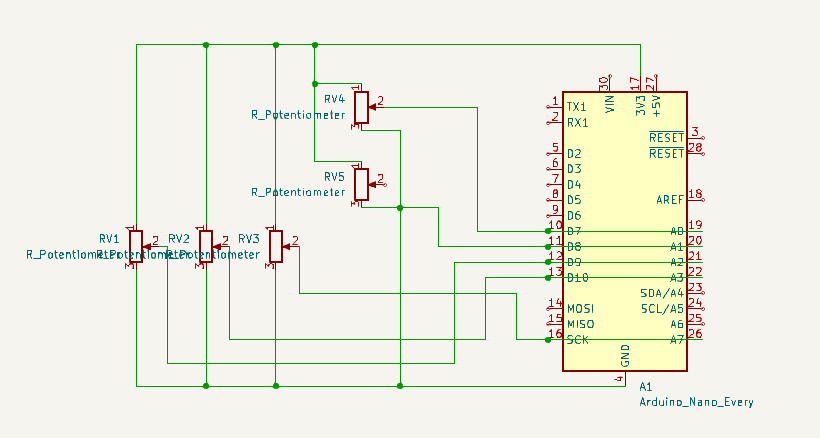

SDXLs, Did you ever stop to think about the safety checks on these things?
This post is from my twitter, I wrote it a while back and here's a little more elaborate version of that same, here's a better explaination for how safety checker works!
SDXLs, Did you ever stop to think about the safety checks on these things? Of course not, you're too busy making anime portraits. Well let me enlighten you - their 'safety' is an embarrassing joke. A Thread - 1/N#SDXL #SD15 #AI #AIart
— Shauray (e/acc) (@Shauray7) April 12, 2024
$x=\frac{-b\pm\sqrt{b^2-4ac}}{2a}$
Getting Down to Business
So, what's deej all about? Well, picture this: you're knee-deep in a gaming session, blasting your favourite tunes in the background, when suddenly, you realize you need to turn down the volume on your voice chat without tabbing out. Enter deej. This little contraption lets you control the volumes of different apps using real-life sliders – think DJ-style – without interrupting your flow. Pretty neat, right?
Building the Damn Device
Now, onto the nitty-gritty – building the hardware. As someone who's no stranger to tinkering with electronics, I gotta say, putting together the hardware for deej was a breeze. It's basically hooking up some slider potentiometers to an Arduino board and letting the magic happen. And don't worry if you're not a hardware whiz – the project documentation has got your back every step of the way.
Tinkering with Software:
Once the hardware was up and running, it was time to dive into the software side of things. Configuring deej is a piece of cake – just whip up a simple YAML file to map sliders to your favorite apps and devices, and you're good to go. The lightweight desktop client, written in Go and a simple ass arduino code that converts all the analog signals from the potentiometers to sweet digital signals [0-1024], plays nice with your system and gives you real-time control over app volumes !
Experience
There is something satisfying about tweaking the volume with a physical slider, the software seems a little laggy at times, it does not auto detect the contorller after re-connecting it - nothing that cannot be changed with a few lines of GO code, the hardware can become a pain sometimes if the potentiometers are not the best quality available specially the one that rotates there can be a lot of signal errors that comes with it, but overall given the thing is opensource and you can just improve on whatever you want the thing is a beast !

My DEEJ controller is just a random box with all the electronics (I should learn CAD and get a 3D printer), I have controllers for Brave, Spotify, Discord and some extra controllers for Master which is basically for every process and MISC which is for everything except Brave,Spotify and Discord.
Disclaimer: The opinions expressed in this review are solely my own and do not reflect the views of any organization or entity.